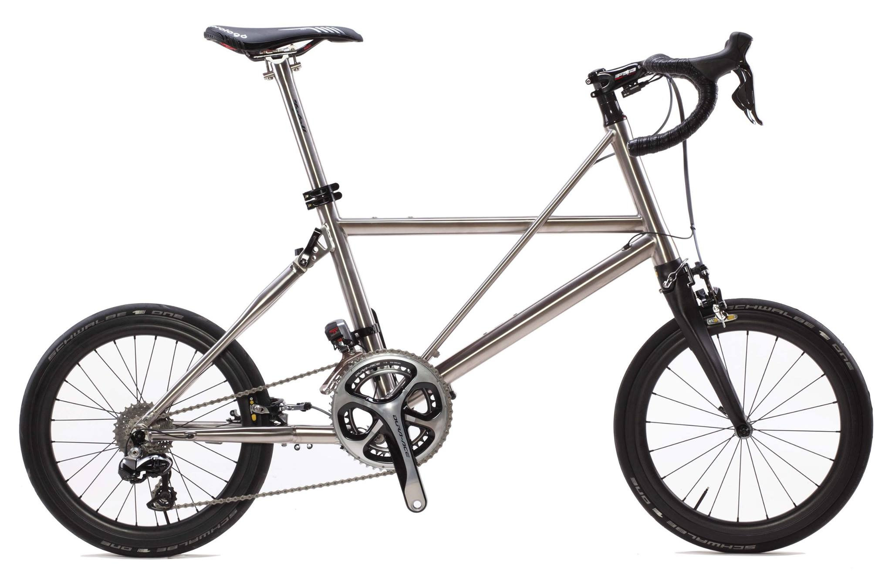
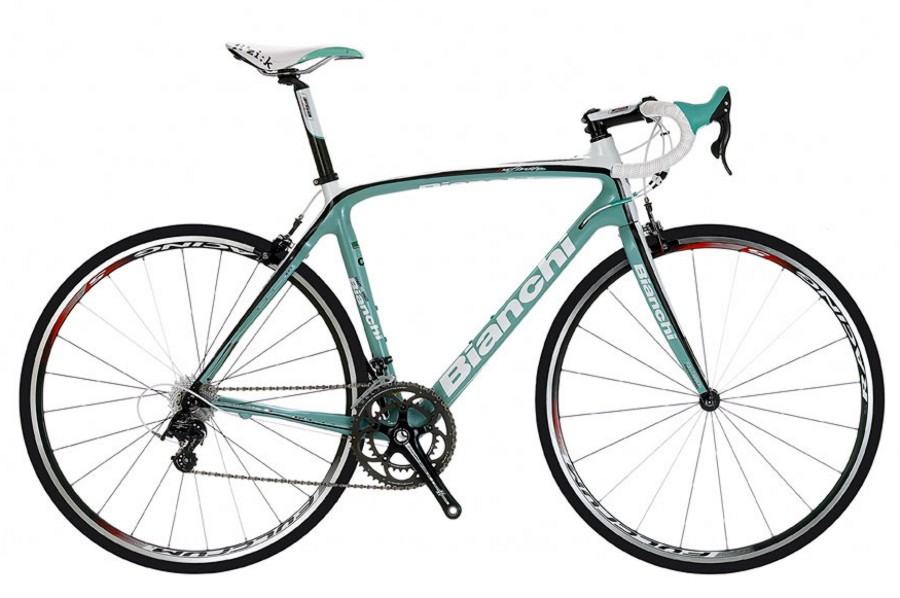

Cargo Bike
- Carbon fibre frame
- Shimano XTR components
- Size: 58cm
- Wheels: 28"
- $2900
Bicycles for everyone
A lightest and fastest foldable bike is made from titanium and featuring elite Shimano Dura-Ace components. It will let you take your bike with you wherever you go.
A supreme carbon frame that is complimented by Shimano's latest components. The perfect road bike for the enthusiasts.
The fastest and most agile tadpole trike on the Asian market, this road trike has a hydroformed aluminium tubing frame, complimented with SRAM Force 22 components.
In this bicycle you will find the ultimate cycling experience.
Copyright 2016 Ernvik Cycles